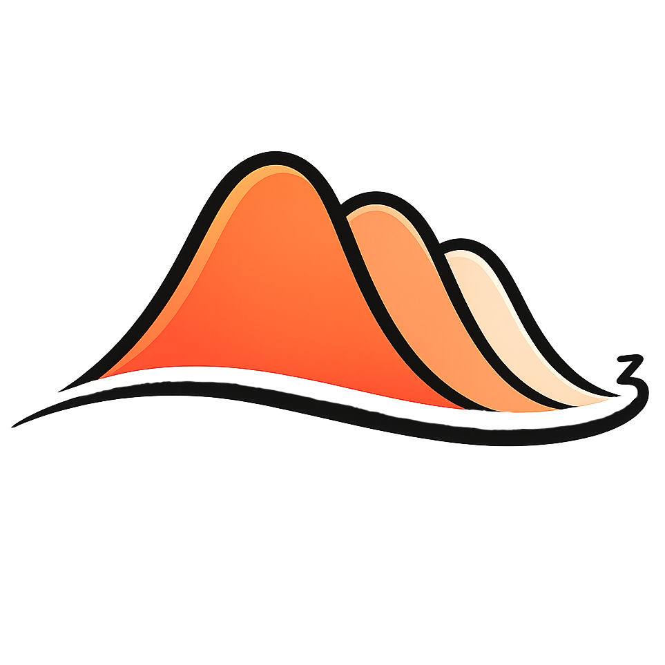

MorphZ#
What MorphZ Computes#
MorphZ estimates the Bayesian marginal likelihood (evidence) \(z\) from posterior samples. It is a post-processing tool: it does not run its own sampler, and places no requirements on which sampler produced the posterior draws — nested sampling (e.g. dynesty), parallel-tempered MCMC, HMC, NUTS (e.g. NumPyro), or anything else.
Given posterior samples, the prior, and the likelihood, MorphZ returns \(\log \hat z\) together with a relative-error diagnostic.
MorphZ targets the integral
which underpins Bayesian model comparison through the Bayes factor
How It Works#
MorphZ has two components.
The Morph Approximation#
MorphZ first builds a tractable approximation to the posterior, called the Morph approximation, by factorising the \(d\)-dimensional posterior into a product of low-dimensional joint factors over disjoint blocks of parameters, plus marginals over leftover singleton parameters:
Here \(L\) is the block length, \(B_L\) is a partition of the parameter indices \(\Gamma = \{1,\ldots,d\}\) into disjoint blocks of length \(L\), and \(S(B_L)\) collects any leftover (singleton) indices.
Block membership is chosen by maximising the sum of block total correlations
an information-theoretic measure of joint dependence (linear and non-linear) inside the block. This is principled: maximising \(\sum_b C(\boldsymbol{\theta}_b)\) is equivalent to minimising \(D_{\mathrm{KL}}(P\,\|\,\mathcal{M}_{B_L})\), so the Morph approximation is the closest product-of-blocks approximation to the true posterior at order \(L\).
The optimisation is solved with the Seeded Greedy Maximisation (SGM) algorithm. Block and singleton densities are fit with multivariate Gaussian-kernel KDEs.
Optimal Bridge Sampling#
MorphZ then uses \(\mathcal{M}_{B_L}\) as the proposal \(g(\boldsymbol{\theta})\) inside an optimal bridge sampling estimator,
with the minimum-variance bridge function
where \(f_1 = N_1/(N_1+N_2)\) and \(f_2 = N_2/(N_1+N_2)\) are the posterior and proposal sample fractions. Because \(h\) depends on \(z\), MorphZ solves for \(\hat z\) iteratively from an initial guess.
To avoid reuse bias, MorphZ splits the supplied posterior samples into one batch for fitting \(\mathcal{M}_{B_L}\) and a separate batch for bridge sampling.
What MorphZ Returns#
For each call, MorphZ produces:
\(\log\hat z\), the log-evidence estimate.
A bridge-sampling relative mean-squared error diagnostic on \(\hat z\), computed from the same posterior and proposal samples, so no additional likelihood evaluations are needed.
Citation#
If you use MorphZ, please cite:
@article{1554-y6ns,
title = {Enhancing evidence estimation through informed probability density approximation},
author = {Zahraoui, El Mehdi and Maturana-Russel, Patricio and Vajpeyi, Avi
and van Straten, Willem and Meyer, Renate and Gulyaev, Sergei},
journal = {Phys. Rev. D},
volume = {113},
issue = {8},
pages = {083014},
year = {2026},
month = {Apr},
publisher = {American Physical Society},
doi = {10.1103/1554-y6ns},
url = {https://link.aps.org/doi/10.1103/1554-y6ns}
}
MorphZ#


MorphZ estimates the Bayesian marginal likelihood, or evidence, from posterior samples. It is a post-processing tool: it does not run its own sampler, and it places no requirements on which sampler produced the posterior draws. The same workflow can be used with nested sampling, parallel-tempered MCMC, HMC, NUTS, or any other sampler that provides posterior samples.
Given posterior samples, the prior, and the likelihood, MorphZ returns the log-evidence estimate together with a bridge-sampling relative-error diagnostic. The target integral is
z(X \mid \mathcal{M}) = \int_{\Theta}
L(X \mid \boldsymbol{\theta}, \mathcal{M})
\pi(\boldsymbol{\theta} \mid \mathcal{M})
d\boldsymbol{\theta}.
How It Works#
MorphZ has two main components.
Morph Approximation#
MorphZ first builds a tractable approximation to the posterior, called the Morph approximation, by factorising the full posterior into a product of low-dimensional joint factors over disjoint blocks of parameters, plus marginals over leftover singleton parameters:
\mathcal{M}_{B_L}(\boldsymbol{\theta}) =
\prod_{b \in B_L} P_b(\boldsymbol{\theta}_b)
\prod_{s \in S(B_L)} P_s(\theta_s).
Block membership is chosen by maximising the sum of block total correlations, an information-theoretic measure of joint dependence inside each block. This selects the product-of-blocks approximation that is closest to the posterior at the chosen order. The optimisation is solved with Seeded Greedy Maximisation (SGM), and block and singleton densities are fit with multivariate Gaussian-kernel KDEs.
Optimal Bridge Sampling#
MorphZ then uses the Morph approximation as the proposal distribution inside an optimal bridge-sampling estimator. To avoid reuse bias, it splits the supplied posterior samples into one batch for fitting the Morph approximation and a separate batch for bridge sampling.
For each call, MorphZ produces:
logz, the log-evidence estimate.A bridge-sampling relative mean-squared error diagnostic, computed from the same posterior and proposal samples.
Features#
Morph approximation object.
Total correlation computation for higher-order correlations.
Multiprocessing support for non-vectorized likelihoods.
Mutual information plot.
Installation#
Python 3.10+ is recommended.
pip install morphz
From source (editable):
pip install -e .
Core Usage#
To estimate log_z, provide posterior samples and a log-posterior function. If
you already have log-posterior values for those same samples, pass them as
log_posterior_values to avoid recomputing them.
import morphZ
log_z= morphZ.evidence(
samples,
log_posterior_function=lp_fn,
log_posterior_values=log_prob,
n_resamples=5000,
n_estimations=1,
morph_type="2_group",
output_path="./example/",
)
Run The Examples#
Interactive notebooks live in examples/:
examples/eggbox.ipynb— eggbox likelihood (dynesty nested sampling)examples/gaussian shell.ipynb— Gaussian shell (dynesty nested sampling)examples/peak_sampling.ipynb— sharply peaked posteriorexamples/numpyro_gaussian_shell.ipynb— Gaussian shell with NUTS via NumPyroexamples/jaxns_gaussian_shell.ipynb— Gaussian shell with nested sampling via JAXNSexamples/numpyro_morphz_lnz.ipynb— log-evidence comparison across morph types (NumPyro/NUTS)
Citation#
If you use MorphZ, please cite:
@article{1554-y6ns,
title = {Enhancing evidence estimation through informed probability density approximation},
author = {Zahraoui, El Mehdi and Maturana-Russel, Patricio and Vajpeyi, Avi
and van Straten, Willem and Meyer, Renate and Gulyaev, Sergei},
journal = {Phys. Rev. D},
volume = {113},
issue = {8},
pages = {083014},
year = {2026},
month = {Apr},
publisher = {American Physical Society},
doi = {10.1103/1554-y6ns},
url = {https://link.aps.org/doi/10.1103/1554-y6ns}
}
API Highlights#
Morphs:
Morph_Indep,Morph_Pairwise,Morph_Group,Morph_Tree.Bandwidths:
select_bandwidth,compute_and_save_bandwidths.Evidence:
evidence,bridge_sampling_ln(lower‑level),compute_bridge_rmse.Total correlation:
Nth_TC.compute_and_save_tc.
Notes:
If you pass a numeric
kde_bw(e.g.,0.9) the library skips bandwidth JSONs.pair/group proposals will compute and cache
MI.json/params_*_TC.jsonon first use.
Dependencies#
Core:
numpy,scipy,matplotlib,corner,networkx,emcee,statsmodels,scikit-learnOptional:
pandas(CSV labels),pygraphviz(nicer tree layout),scikit-sparse(optional exception type)
Development#
Build wheels/sdist:
python -m buildCheck metadata:
twine check dist/*Tests live in
tests/
Versioning & Release#
Versioning is derived from git tags via setuptools_scm.
Tag a release:
git tag vX.Y.Z && git push --tagsCI: publishes to TestPyPI on pushes to
main/master; to PyPI onv*tags.Uses PyPI/TestPyPI Trusted Publishing (OIDC). You can also use API tokens if preferred.
License#
BSD-3-Clause. See LICENSE for details.
Note
The README content above is copied automatically from the project root each
time the documentation is built. To refresh it locally, run
./docs/build_docs.sh.